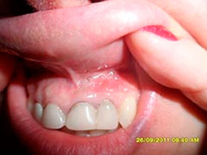

Главная / Статьи / Клинические случаи лечения трофических язв
Клинические случаи лечения трофических язв с использованием аппарата MULTILINE™
Трофическая язва – это, за редким исключением, не самостоятельная болезнь, а тяжелое патологическое осложнение целого ряда болезней, которые сопровождаются нарушением кровообращения при заболеваниях:
- сосудов;
- вен (хроническая венозная недостаточность);
- артерий (проявления атеросклероза, эндартериита, сахарного диабета, диабетическая ангиопатия). Пролежни также являются вариантом артериальной язвы;
- дерматологических (инфицированная экзема);
- аутоимунных (коллагенозы, васкулиты, болезни крови);
- при повреждении нервов или спинного мозга (нейропатические);
- нарушение оттока лимфы;
- травмы костей.
Этиологическая частота трофических язв:
- варикозные 52%
- артериальные 14%
- смешанные 13%
- посттромбофлебитические 7%
- посттравматические 6%
- диабетические 5%
- нейротрофические 1%
- прочие 2%
Классификация:
по глубине:
- I степень – поверхностная язва (эрозия) в пределах дермы
- II степень – язва достигающая подкожной клетчатки
- III степень – язва, которая пенетрирует до фасции или субфасциальных структур (мышцы, сухожилия, связки, кости), в полость суставной сумки или сустава
по площади:
- малые до 5 см2
- средние от 5 до 20 см2
- обширные (гигантские) свыше 50 см2
Современное лечение трофических язв направлено на:
- стимуляцию регенеративных процессов;
- нормализацию тканевого кровотока;
- очищение язвенной поверхности от отмерших тканей и патологической флоры;
- быстрое восстановление работоспособности и ранней реабилитации больного.

Трофическая язва подошвенной поверхности стопы. Хронический посттравматический остеомиелит. Б-ой Л. 29 лет.
Результат после 5 сеансов лазерного лечения.
Задачей предлагаемого способа лечения трофических язв высокоэнергетическим лазером является лечение гнойно-воспалительных изменений в мягких тканях, ускорение репаративных процессов в них и сокращения сроков их заживления.
Для реализации способа необходимо обеспечить два условия. Первое — поверхность язвы должна быть освобождена от некротических и гнойных масс. Второе — необходимо улучшить капиллярное кровоснабжение в области язвы и прилегающих к ней тканях и по возможности обеспечить стимуляцию роста новых, не измененных тканей.
Первой часть воздействия может быть реализована благодаря уникальным возможностям излучения эрбиевого лазера, работающего в импульсном режиме. При использовании импульсов длительностью, меньшей чем ВТР (время термической релаксации — время в течение которого облученный объект аккумулирует тепло, а не передает его окружающим тканям) клеток, вся энергия лазерного импульса расходуется на испарение поглотивших его клеток, а не разогрева нижележащих слоев тканей. В результате этого, создаются такие условия, при которых происходит локальный разогрев тканей и гнойных масс, до температуры, заведомо превышающей температуру жизнеспособности любых биологических объектов, включая гнойные бактерии и их споры.
Широко используемый в медицине углекислотный лазер не способен реализовать такой режим абляции, так как температура испарения достигается постепенно, с перегревом нижележащих слоев, что дает возможность диффундировать гнойным бактериям в здоровые ткани.
Так как данный режим (режим абляции) не подразумевает разогрев нижележащих слоев тканей, то возможно проведение стерилизации раневых поверхностей с отличным визуальным контролем глубины абляции. Контролем достаточности обработки является появление капиллярного кровотечения в зоне обработки. Это говорит о достижении живых тканей.
Преимущество такого метода стерилизации раневых поверхностей, над всеми иными очевидна. Использование локальных сверхвысоких температур, не позволяет выработать резистентность к воздействию. Степень травмирования здоровых тканей минимальна. Данный метод может быть реализован только с помощью эрбиевого лазера работающего в импульсном режиме.
Организация улучшения капиллярного кровоснабжения необходима для решения нескольких задач. Прежде всего, после проведения сеанса санации гнойной раны, необходимо обеспечить приток крови, для очистки раны и стимулирования ее эпителизации. Кроме того, хорошее кровоснабжение является необходимым условием для роста новых тканей.
Улучшения капиллярного кровоснабжения можно добиться используя разработанный в компании «ЛИНЛАЙН Медицинские Системы» метод пространственно модулированной абляции (SMA), при котором создаются особые очаги микротравмирования тканей. Данные микротравмирования располагаются внутри тканей, имеют размерности от сотен нанометров, до десятков микрометров и не контактируют с внешней агрессивной средой, что приводит к стимуляции роста новых, не измененных тканей в зоне воздействия и усиления капиллярного кровоснабжения данных областей.
Практическое использование данного метода позволяет говорить о том, что оно позволяет достичь положительного лечебного эффекта — резко уменьшить развитие воспалительных изменений в трофических язвах, и предотвратить их увеличение либо развитие генерации инфекции, ускорить процесс регенерации тканей, и тем самым способствовать быстрейшему заживлению.
роводили облучение эрбиевым лазером многофункциональной системы MULTILINE™ с длиной волны 2940nm с модулем SMA d=6мм 2 раза в неделю, курсом 4-5 сеансов. По мере стихания воспалительного процесса и появления признаков грануляции в дальнейшем, с целью стимулирования регенеративных процессов, лечение проводили 1 раз/неделю. В зависимости от скорости эпителизации количество сеансов у одного больного колебалось от 6 до 10.
Лечение нейротрофических язв представляет собой особенно трудную задачу. На фото показана хроническая язва с плотными каллезными краями, которая существовала у пациентки 9 лет.
Посттравматическая нейротрофическая язва стопы, длительность около 5 лет, неэффективность традиционного лечения (перевязки, повязки с мазями, гелями, антисептиками, физиотерапевтическое лечение).
Результат после 5 сеансов лазерного лечения.
Синегнойная инфекция при диабетической ангиопатии
Ампутационная культя голени (сахарный диабет). Обширный некроз краев раны (Бак. Исследования – синегнойная палочка).

Результат после 1 сеанса лазерного лечения.
Результат после 2-х сеансов лазерного лечения.
Pseudomonas aeruginosa — один из частых возбудителей гнойно-воспалительных процессов в условиях стационара. Лечение синегнойной палочки затруднительно ввиду высокой устойчивости ее к антибиотикам и др. медикаментам. Возбудитель устойчив к действию антисептиков, способен нейтрализовать некоторые дезинфектанты.
При бактериологическом исследовании материала с поверхности гнойных ран после процедуры абляции излучением эрбиевого лазера наблюдалось снижение содержания микроорганизмов ниже критического уровня, либо — полная стерильность. Наблюдается выраженная антибактериальная активность эрбиевого лазера при воздействии на большинство патогенных бактерий
Диабетическая ангиопатия
Трофическая язва появляется, когда ткани не получают достаточно питательных веществ и кислорода. У больных сахарным диабетом приток крови к тканям достаточен, но поступающие с кровью питательные вещества плохо усваиваются тканями.
Обычно у больных диабетической ангиопатией проходимость капиллярного русла оказывается минимальной. Рост грануляционной ткани у таких больных либо не отмечается вовсе, либо протекает очень вяло. На фото мы видим значительную активацию роста грануляционной ткани и ускоренное заживление раны при воздействии лазером Er:YAG + SMA-модуль.
Трофическая язва подошвенной поверхности стопы.
Результат после 2-х сеансов лазерного лечения.
Нередко к трофической язве присоединяются микробная или грибковая инфекция, что усугубляет течение болезни.
Трофическая язва с гнойным содержимым.
Результат через 2 дня после процедуры.
Б-ой С. Р. 1995 г.р. д-з основной: осложнённый компрессионно – оскольчатый перелом тела и дужек с5 позвонка. Перелом пластин дуг с3 позвонка. Нижняя спастическая параплегия, верхний вялый парапарез. Нарушение функции тазовых органов.
В области крестца определяется глубокий пролежень в некротически – воспалительной стадии 10х12см (S=120см2). Дном пролежня являются мышцы, края пролежня инфильтрированы и подрыты. Раневая поверхность покрыта фиброзно-гнойным налетом. Наличие кишечной палочки в ране. Обработка трофической язвы излучением эрбиевого лазера перед пересадкой кожи позволит ускорить очищение раны и увеличить приживаемость пересаживаемых кожных лоскутов.
Этапы лечения пролежня задней поверхности левого бедра IV ст. Пролежни — омертвление (некроз мягких тканей в результате постоянного давления сопровождающейся местными нарушениями кровообращения и нервной трофики). Монолечение — лечение пролежня облучением эрбиевого лазера с присоединенным SMA-модулем.

Остеомиелит верхней челюсти
Остеомиелит верхней челюсти представляет собой инфекционный гнойно–некротический процесс, развивающийся в кости и окружающих ее тканях.
- донтогенный (источник больной зуб);
- гематогенный;
- осттравматический.
Остеомиелит вызывают различные микроорганизмы, чаще стафилококки, реже стрептококки и др. бактерии.
Больная С. 1981г.р. Жалобы на боли в области верхней челюсти, с усилением и иррадиацией в глазницу и висок. Повышение температуры тела до 38 градусов С. Патологическому процессу предшествовал острый апикальный периодонтит, свищи с выделением гноя.
Пролечено 6 пациентов с хорошим лечебным эффектом. В ходе проводимого лечения происходило купирование болей и зуда, уменьшение отечности тканей и воспалительных явлений. Наблюдался постепенный регресс патологических изменений в зоне трофических расстройств.
Выводы
Использование эрбиевого лазера MULTILINE™ с модулем SMA в комплексной терапии трофических язв различной этиологии патогенетически обосновано и клинически эффективно.
Установлено: лазерное излучение активизирует микроциркуляцию в ране, действует бактериостатически, ускоряет отторжение некротических тканей, уменьшает отек, стимулирует рост грануляций и их эпителизацию.
Включение лазеротерапии в комплекс лечебных мероприятий по лечению трофических язв позволяет улучшить результаты их лечения, сократить сроки заживления ран.
Потройный Аркадий Владимирович врач - хирург /консультант по медицине «ЛИНЛАЙН Медицинские Системы». Лекция в Белорусском Государственном Медицинском Университете